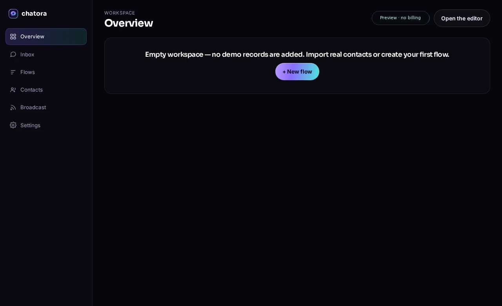
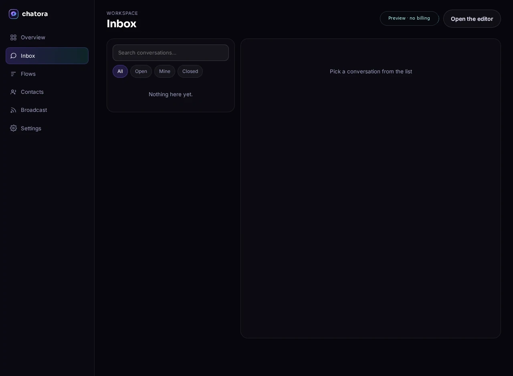
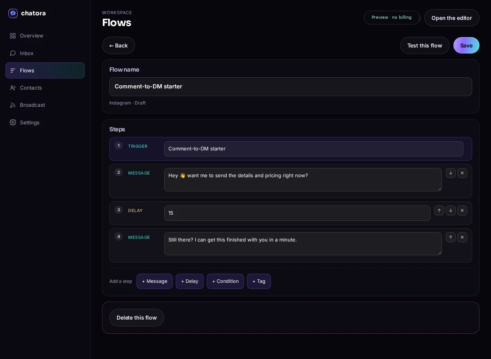
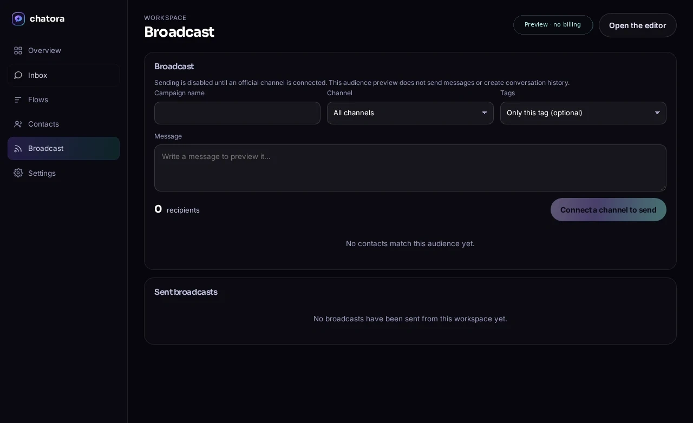

فكرة مستقبلية: مسارات للتعليقات والرسائل وإشارات القصص. إنستجرام غير متصل في المعاينة.
تسويق محادثات بالذكاء الاصطناعي · معاينة المنتج
حوّل كل تعليق إلى عميل يدفع
نبني Chatora كبديل أكثر مرونة وبأسعار أكثر تنافسية لتسويق المحادثات بالذكاء الاصطناعي عبر إنستجرام وواتساب وتيك توك وماسنجر. المعاينة الحالية تتيح مسودات قابلة للتعديل وأدوات CSV ومعاينة الجمهور؛ ربط القنوات وردود الذكاء الاصطناعي والخطط المدفوعة غير متاحة بعد.
لا توجد فوترة في المعاينة
المسارات تظل مسودات
واجهة بالعربية والإنجليزية
قنوات مراسلة مخططة — غير متصلة في هذه المعاينة
Instagram
WhatsApp
TikTok
Messenger
Telegram
SMS
Email
Web chat
Instagram
WhatsApp
TikTok
Messenger
Telegram
SMS
Email
Web chat
جوه المنتج
مساحة العمل اللي بتستلمها أول ما تسجّل
سجّل في مساحة عمل فاضية من جهات الاتصال والمحادثات الوهمية. استورد بياناتك، وضيف سيناريو كمسودة، واربط قناة رسمية قبل إرسال أي رسالة.




- حسابات Supabase حقيقية مع تسجيل بكلمة مرور؛ مزوّدو الدخول الخارجيون غير مفعّلين بعد
- بياناتك معزولة لكل مستخدم بـrow-level security
- بيانات مساحة العمل ومسودات السيناريوهات بتتحفظ؛ مفيش رسائل صادرة بتتسجل كأنها اتبعت
- عربي وإنجليزي، ومن اليمين للشمال
- يمكن تصفية معاينة جمهور البث حسب الوسم أو القناة؛ الإرسال متوقف حتى ربط مزوّد.
0
مزود مراسلة متصل في المعاينة
0
مسودة قابلة للتعديل في معرض القوالب
0
جهة اتصال تجريبية تُضاف تلقائيًا
0
خطة مدفوعة معلنة من Chatora
قنوات مخططة للمستقبل
مسارات مراسلة للقنوات التي يستخدمها عملاؤك
القنوات المعروضة أفكار مستقبلية وليست متصلة في المعاينة الحالية. لا يوجد صندوق وارد مشترك أو رد آلي أو إرسال مباشر مفعّل.
فكرة مستقبلية: دعم اختياري وكتالوجات ورسائل الطلبات. واتساب غير متصل في المعاينة.
TikTok
فكرة مستقبلية: متابعة التعليقات ومعلومات المنتجات. تيك توك غير متصل في المعاينة.
Messenger
فكرة مستقبلية: مراسلة صفحات وإعلانات فيسبوك. ماسنجر غير متصل في المعاينة.
Telegram
فكرة مستقبلية: مسارات للبوتات والمجتمعات. تيليجرام غير متصل في المعاينة.
SMS
فكرة مستقبلية: متابعة عبر SMS بموافقة صريحة. لا يوجد مزوّد متصل ولا ندّعي معدل فتح.
فكرة مستقبلية: متابعة عبر الإيميل بموافقة صريحة. لا يوجد مزوّد بريد متصل.
Web chat
فكرة مستقبلية: مراسلة عبر موقعك. لا توجد أداة دردشة ويب نشطة في المعاينة.
ثمانية تصورات للقنوات معروضة؛ لا يوجد أي مزوّد متصل في المعاينة الحالية.
مبني ليبيع
كل ما تتمناه في أداتك الحالية
صُممت Chatora حول الذكاء الاصطناعي والإيرادات والسرعة. بطاقات الميزات أدناه مفاهيم مستقبلية؛ المعاينة تدعم المسودات وأدوات CSV والاختبارات المحلية ومعاينة الجمهور، لكنها لا تقدم ردود ذكاء اصطناعي أو مراسلة مباشرة.
محرر مرئي — أو اكتب الفكرة فقط
تصوّر مستقبلي: قد يتيح محرر مرئي ترتيب الشروط والتأخير والوسوم والتحويل لموظف، مع مساعدة الذكاء الاصطناعي في إعداد مسودة من وصف نصي. المعاينة الحالية تتيح تعديل المسودات يدويًا فقط؛ ولا تتضمن لوحة مرئية لا نهائية أو إنشاء تدفقات بالأوامر أو التفعيل أو الأتمتة المباشرة.
Comment "price"
Send DM
Follow-up +2h
Checkout link
وكيل ذكي مدرَّب على علامتك
تصوّر مستقبلي: قد يستخدم وكيل ذكاء اصطناعي أسئلة شائعة وبيانات كتالوج وإرشادات العلامة المعتمدة لإعداد مسودات لردود المنتجات وتحويل طلبات مختارة إلى موظف. لا يوجد مزوّد ذكاء اصطناعي أو استعلام كتالوج أو بيانات مخزون مباشر متصل في المعاينة الحالية.
Example question: [product detail]
Example reply: [approved product information]
Example response: [customer reply]
تخطيط البث للجمهور المناسب
تصوّر مستقبلي: قد يتيح مسار بث مستقبلي تقسيم الجمهور حسب السلوك وتخطيط مواعيد الإرسال. المعاينة الحالية تعرض الجمهور فقط؛ ولا تحسّن التوقيت أو ترسل الرسائل.
صندوق وارد موحّد للمحادثات
تصوّر مستقبلي: قد يجمع صندوق وارد موحّد الرسائل والتعليقات والبريد الإلكتروني في سلسلة واحدة مع الوسوم والملاحظات وتوزيع المهام. لا توجد قنوات مراسلة متصلة في المعاينة الحالية.
تصوّر مستقبلي: ذكاء اصطناعي بعد ساعات العمل
قد يساعد وكيل ذكاء اصطناعي مستقبلي في متابعة المحادثات خارج ساعات العمل. هذه ليست خدمة متاحة الآن: لا يوجد وكيل مباشر أو قناة مراسلة أو تغطية 24/7 مفعّلة في المعاينة.
It's 2am there, are you real? 😅
مثال توضيحي للمستقبل — لا يوجد وكيل مباشر متصل.
شاتورا AI
ذكاء اصطناعي لا يرد فقط — بل يُغلق الصفقة.
اتجاه وكيل الذكاء الاصطناعي جزء من خارطة طريق المنتج. المعاينة الحالية لا تقدم ردودًا مباشرة أو استعلامًا عن الكتالوج أو روابط دفع؛ المحادثة المعروضة نص توضيحي وليست تفاعلًا مع عميل.
- تصوّر مستقبلي: ربط الردود بمحتوى كتالوج وأسئلة شائعة معتمد
- تصوّر مستقبلي: دعم العربية والإنجليزية ولغات أخرى
- تصوّر مستقبلي: تحويل محادثات مختارة إلى موظف
- لا توجد ميزة تعلم من المحادثات مفعّلة في المعاينة
- راجع إشعار الخصوصية؛ لا يوجد مزوّد ذكاء اصطناعي متصل
خطوات المعاينة الحالية
من مساحة فارغة إلى اختبار مسودة محلي
01
أنشئ مساحة عمل
أنشئ حسابًا حقيقيًا لفتح مساحة عمل فارغة. تسجيل الدخول الخارجي وربط مزودي القنوات غير مهيئين بعد.
02
اختر مسودة بداية
اختر مخططًا توضيحيًا وعدّل خطوات المسودة. القوالب غير مختبرة للإنتاج وغير متصلة.
03
اختبر المسودة محليًا
شغّل المحاكاة في المتصفح لمراجعة الخطوات. لا يوجد مزوّد متصل ولا تُرسل أي رسالة.
مقارنة مؤرخة للموردين
قارن الأسعار المنشورة، لا الوعود
تُظهر صفحة ManyChat العامة للأسعار في الولايات المتحدة، بعد التحقق في 27 أكتوبر 2026، خطة مجانية لـ25 جهة اتصال نشطة وأسعارًا شهرية قدرها 14 و29 و69 دولارًا مع فوترة سنوية لخطط Essential وPro وBusiness. لم تعلن Chatora عن سعر أو ربطت قنوات مراسلة، لذلك لا ندّعي توفيرًا.
اسحب للمقارنة
| السعر / الحالة | ManyChat · الصفحة العامة الأمريكية | |
|---|---|---|
| سعر الاشتراك | لم يُعلن | الخطة المجانية · 25 جهة اتصال نشطة |
| أمثلة على الخطط السنوية | لم يُعلن | Essential: 14 دولارًا/شهر (250 جهة اتصال) · Pro: 29 دولارًا/شهر (2,500) · Business: 69 دولارًا/شهر (7,500) |
| المراسلة عبر قنوات مباشرة | لا يوجد مزود متصل؛ لا تُرسل رسائل | تختلف حدود الخطط والقنوات؛ راجع صفحة الأسعار الرسمية |
| أسعار واتساب في مصر | لا يوجد اتصال واتساب أو سعر مزود مضبوط | 0.0740 دولار تسويقية · 0.0041 منفعة · 0.0036 خدمة |
هذه لقطات بالدولار من صفحات الموردين وليست أسعار Chatora. قد تختلف الأسعار حسب البلد والفوترة والضرائب والاستخدام؛ أسعار ManyChat لمصر نافذة من 1 أكتوبر 2026.
اقرأ المقارنة المؤرخة ومصادرها
حقائق المعاينة الحالية
شوف حالة المنتج بنفسك
المعاينة الحالية لا تحتوي على شهادات عملاء أو تكاملات مراسلة مباشرة. يمكنك مراجعة المسودات والمحاكاة المحلية وأدوات CSV دون اعتبار الأمثلة نتائج فعلية.
معرض القوالب يحتوي على 45 مسودة بداية قابلة للتعديل. اختيار قالب ينشئ مسودة؛ لا يربط قناة ولا يرسل رسالة.تصفح مسودات البداية
لا يوجد مزود مراسلة متصل ولم تعلن Chatora أسعار اشتراك. المقارنة تعرض مصادر الموردين المؤرخة، وليس أسعار Chatora.شوف المقارنة
راجع المسودات وملاحظات الأسعار المؤرخة. أداة أو خدمة ترحيل ManyChat غير متاحة في هذه المعاينة.اتصفح القوالب
حالة الأسعار الحالية
لم تعلن Chatora عن خطط مدفوعة
لا يوجد سعر اشتراك أو فوترة أو دفع إلكتروني من Chatora حاليًا. الحساب يفتح معاينة للمنتج، وليس خطة مجانية. راجع لقطات أسعار الموردين المؤرخة في صفحة الأسعار.
لا توجد خطط مدفوعة منشورة
استكشف مسودات المسارات وأدوات CSV ومعاينة الجمهور. القنوات المباشرة وردود الذكاء الاصطناعي والفوترة غير مفعّلة.
افتح معاينة المنتج شاهد لقطات أسعار الموردين المؤرخة
خارطة تكاملات مستقبلية
أدوات قد نربطها مستقبلًا
الأسماء المعروضة أهداف محتملة لخارطة الطريق فقط. لا يوجد متجر أو دفع أو CRM أو أتمتة أو مزود اتصالات متصل بالمعاينة الحالية.
Shopify
WooCommerce
Stripe
Zapier
Make
HubSpot
Klaviyo
Google Sheets
Slack
Calendly
Notion
Airtable
Webhooks
حالة التكاملات ←
استكشف المعاينة
استكشف المسودات والمحاكاة المحلية
راجع مسودات البداية، واختبر محاكاة محلية، واقرأ أفكارًا توضيحية لمسارات العمل — دون اعتبارها تكاملات مباشرة.
45 مسودة بداية قابلة للتعديل
مخططات توضيحية للتعليقات ومتابعة السلة والحجز والدعم. الاختيار ينشئ مسودة؛ ليست مختبرة للإنتاج أو متصلة بقناة.
تصفح القوالبجرّب محاكاة محلية لمسار
حمّل مثالًا، راجع الخطوات، وشغّل محاكاة داخل المتصفح. لا تتصل بمزوّد أو تستخدم بيانات عميل أو ترسل رسائل.
افتح المحررأفكار مسارات حسب نوع العمل
أفكار توضيحية للمتاجر وصناع المحتوى والوكالات والعيادات — ليست دراسات حالة أو نتائج مقاسة.
شاهد حالات الاستخدام
أسئلة شائعة
أسئلة بإجابات صادقة
لم تعلن Chatora عن أسعار اشتراك، لذلك لا يمكن حساب التوفير. صفحة المقارنة تعرض أسعار ManyChat العامة مع تاريخ التحقق؛ راجع السعر الإقليمي والفوترة والضرائب مع ManyChat.
لا تقدم Chatora أتمتة إنستجرام في المعاينة الحالية ولا يوجد مزود قناة متصل. أي تكامل مستقبلي يتطلب مزودًا معتمدًا والالتزام بسياسات المنصة؛ لا نقدم ضمانًا لسلامة الحساب.
لا تحتاج إلى برمجة لاستكشاف محرر المسودات وأدوات CSV والمحاكاة المحلية. إنشاء المسارات بالذكاء الاصطناعي وواجهة API العامة وwebhooks غير متاحة في المعاينة.
لم تعلن Chatora حدود خطط مبنية على جهات الاتصال أو قواعد فوترة. معاينة المنتج لا تتضمن اشتراكًا؛ راجع صفحة الأسعار لمعرفة الحالة الحالية.
واجهة الموقع ومساحة العمل متاحتان بالعربية والإنجليزية. ردود الذكاء الاصطناعي المباشرة غير متاحة في المعاينة الحالية.
لا تتوفر أداة أو خدمة لترحيل ManyChat. يمكنك مراجعة مسودات البداية القابلة للتعديل وتكييفها يدويًا.
لم تعلن Chatora عن خطط مجانية أو مدفوعة. الفوترة والدفع غير مفعّلين في معاينة المنتج؛ وهذه ليست خطة اشتراك مجانية منشورة.
تواصل مع Chatora عبر صفحة التواصل للاستفسارات. لا نضمن زمن الرد أو التوفر على مدار الساعة أو دعمًا مخصصًا.
معاينة المنتج · لا توجد فوترة مفعّلة
خطّط لمحادثتك القادمة مع عميلك.
استكشف مسودات مسارات قابلة للتعديل وأدوات CSV لجهات الاتصال ومعاينة الجمهور. تكاملات القنوات المباشرة وردود الذكاء الاصطناعي والخطط المدفوعة غير متاحة في المعاينة الحالية.
✓ لم تُعلن خطة اشتراك
✓ لا توجد فوترة أو صفحة دفع مفعّلة
✓ لا يوجد إرسال مباشر للقنوات